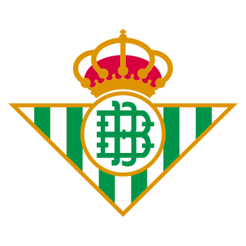

La etiqueta span sirve seleccionar una palabra o un grupo de palabras y modificarlas mediante CSS aplicando un estilo. Por ejeplo, la palabra span esta seleccionada mediante la etiqueta span y la he aplicado un estilo.
La etiqueta div sirve para seleccionar un rango de palabras más amplio que la etiqueta span. Por ejemplo, estos dos apartados estan encerrados en una etiqueta div, cambiando a ambos el color de la letra a gris.
A menudo cuando ajustamos un texto a una altura o anchura determinada, este se solapa encima de otro texto que teniamos. Para evitarlo, podemos utilizar el atributo overflow dentre la etiqueta style. Overflow lo podemos determinar como visible, oculto o automático, donde se pone una barra de desplazamiento. Para ponerlo en oculto, debes utilizar hidden y para poner una barra de desplazamiento. Por ejemplo, el siguiente texto tiene el overflow automático:
El gato doméstico (Felis silvestris catus), llamado más comúnmente gato, y de forma coloquial minino, michino, michi, micho, mizo, miz, morroño o morrongo, y algunos nombres más, es un mamífero carnívoro de la familia Felidae. Es una subespecie domesticada por la convivencia con el ser humano.
El nombre actual en muchas lenguas proviene del latín vulgar catus. Irónicamente, catus aludía a los gatos salvajes, mientras que los gatos domésticos, en latín, eran llamados felis.
Como resultado de mutaciones genéticas, cruzamiento y selección artificial, hay numerosas razas. Algunas, como la raza sphynx o la peterbald están desprovistas de pelo; otras carecen de cola, como los gatos de la raza manx, y algunas tienen coloraciones atípicas, como los llamados gatos azules.
El gato se comunica a través de vocalizaciones. Las más populares son su característico maullido y el ronroneo, pero puede aullar, gemir, gruñir y bufar. Los Gatos desarrollaron el maullido con la única finalidad de poder comunicarse con el ser humano. Además, adopta poses o expresiones que informan, a sus congéneres, sus enemigos o sus cuidadores, de su ánimo o sus intenciones.
Junto con el perro, es el animal doméstico más popular, como mascota, como ayuda en la lucha contra roedores o ambas cosas.
Por su amplio abanico de presas potenciales, por su alta eficiencia como depredador, y por su elevado éxito reproductivo —especialmente si se suministra artificialmente alimento a las colonias sin tomar medidas adicionales para limitar su fertilidad— el gato doméstico está incluido en la lista de las diez especies exóticas invasoras más dañinas del mundo de la Unión Internacional para la Conservación de la Naturaleza.
El modelo de caja es un módulo de CSS que define unas medidas para los elementos de la página web a modo de bloques. Estas medidas son:

Por ejemplo, el padding de la imagen siguiente lo he puesto de 0px; el borde lo he hecho con un grosor de 10px, de color verde y con una forma "ridge"; y el margen es de 15px.
Página hecha por Marcos Fernández López
Enlace a index